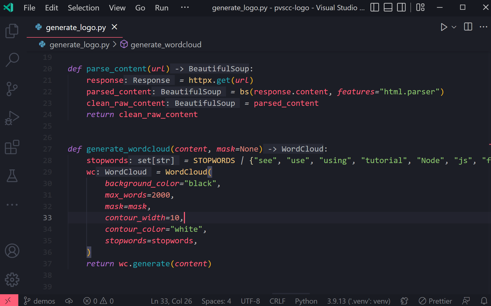

A Criação de um Programa em Python¶
Quando escrevemos um programa em Python, o código que criamos, geralmente salvo em arquivos com extensão .py (os arquivos fonte), passa por um processo bastante diferente do que ocorre em linguagens compiladas como C. Python é uma linguagem interpretada, o que significa que o código não precisa ser transformado em linguagem de máquina antes da execução.
A razão para essa diferença fundamental é que, em Python, existe um componente chamado interpretador que lê o código fonte linha por linha e o executa diretamente. Isso contrasta com o modelo de compilação do C, onde todo o código precisa ser traduzido para linguagem de máquina antes de qualquer execução.
Para executar um programa Python, precisamos essencialmente de duas etapas: edição do código fonte e interpretação. Essa simplicidade é uma das características que torna Python acessível para iniciantes.
Vamos analisar essas etapas e entender como elas diferem do processo em C.
Edição do código fonte¶
Assim como em C, podemos utilizar qualquer editor de texto para escrever um programa em Python. No entanto, para aumentar nossa produtividade, é recomendável usar um ambiente de desenvolvimento integrado (IDE) ou um editor de código específico para programação.
Python é conhecido por sua legibilidade e simplicidade sintática, o que o torna mais amigável para iniciantes em comparação com C. Isto significa que, mesmo sem recursos avançados de IDE, é possível escrever código Python efetivo. No entanto, ferramentas específicas para Python oferecem vantagens significativas:
-
IDEs completas como PyCharm, Visual Studio Code com extensões Python, ou Spyder oferecem um conjunto abrangente de ferramentas para desenvolvimento Python. Estas incluem destaque de sintaxe, autocompletar, depuração integrada, gerenciamento de pacotes, e ferramentas para teste e análise de código.
-
Notebooks interativos como Jupyter Notebook ou Google Colab são particularmente populares para análise de dados, aprendizado de máquina e ensino de Python. Eles permitem combinar código executável, visualizações e texto explicativo em um único documento.

Visual Studio Code com extensão Python, uma das IDEs mais populares para Python
A escolha do ambiente de desenvolvimento para Python frequentemente depende do caso de uso específico. Por exemplo, cientistas de dados podem preferir notebooks Jupyter, enquanto desenvolvedores de aplicações web podem optar por IDEs mais robustas como PyCharm.
Uma vantagem significativa para iniciantes é que Python vem com um modo interativo integrado, acessível pelo comando python ou python3 no terminal. Este modo REPL (Read-Eval-Print Loop) permite experimentar comandos Python e ver os resultados imediatamente, sem necessidade de criar, salvar e executar arquivos.
$ python
Python 3.12.0 (main, Oct 4 2023, 22:41:25) [GCC 11.4.0] on linux
Type "help", "copyright", "credits" or "license" for more information.
>>> print("Hello, World!")
Hello, World!
>>> 2 + 2
4
>>>
Este modo interativo é uma excelente ferramenta de aprendizado, pois permite testar pequenos trechos de código instantaneamente, algo que não tem equivalente direto em C.
Comentários¶
Os comentários em Python, assim como em C, são elementos não executáveis que fornecem descrições e explicações dentro do código-fonte. Eles são essenciais para documentar o código, tornando-o mais compreensível tanto para quem o escreveu quanto para outros desenvolvedores.
Python suporta dois tipos principais de comentários:
O primeiro tipo são os comentários de linha única, que começam com o caractere #. Tudo que estiver após esse símbolo até o final da linha será ignorado pelo interpretador Python:
O segundo tipo, exclusivo do Python, são as strings de documentação ou docstrings. Embora tecnicamente não sejam comentários (são strings literais), docstrings servem como uma forma especial de documentação que pode ser acessada programaticamente. Elas são definidas com três aspas duplas ou simples e são frequentemente usadas para documentar funções, classes e módulos:
def calcular_area(raio):
"""
Calcula a área de um círculo.
Args:
raio (float): O raio do círculo
Returns:
float: A área calculada
"""
import math
return math.pi * raio ** 2
Diferentemente dos comentários em C, Python não possui comentários de múltiplas linhas no estilo /* */. Para comentar blocos inteiros de código, os desenvolvedores Python frequentemente usam o caractere # no início de cada linha ou, em alguns casos, envolvem o código em um par de docstrings que não são atribuídas a nenhuma variável.
Os comentários em Python são utilizados por várias razões importantes:
- Eles explicam o raciocínio por trás de decisões complexas de programação
- Facilitam a revisão de código e a colaboração entre membros da equipe
- Servem como notas temporárias durante o desenvolvimento
- Podem desativar temporariamente partes do código durante testes (comentar código)
As docstrings têm a vantagem adicional de serem acessíveis através do atributo __doc__ ou da função help(), o que facilita a criação de documentação automática:
>>> help(calcular_area)
Help on function calcular_area in module __main__:
calcular_area(raio)
Calcula a área de um círculo.
Args:
raio (float): O raio do círculo
Returns:
float: A área calculada
Assim como em C, as melhores práticas para uso de comentários em Python incluem:
- Comentar o "porquê" ao invés do "como" (o código já mostra como algo é feito)
- Manter os comentários atualizados quando o código muda
- Usar docstrings para documentar funções, classes e módulos
- Evitar comentários redundantes que apenas repetem o que o código claramente expressa
- Seguir convenções estabelecidas como o PEP 257 para docstrings
A filosofia de Python enfatiza a legibilidade do código, conforme expressa no Zen do Python com o princípio "explicit is better than implicit" (explícito é melhor que implícito). Bons comentários contribuem para essa clareza, tornando o código mais acessível e facilitando a manutenção.
Interpretação e Execução¶
graph TD
Fonte --> Interpretador --> Bytecode --> Maquina --> Execução
Fonte@{ shape: doc, label: "**Código fonte**<br />(.py)" }
Interpretador@{ shape: process, label: "Interpretador Python" }
Bytecode@{ shape: doc, label: "**Bytecode**<br />(.pyc)" }
Maquina@{ shape: process, label: "Máquina Virtual Python" }
Execução@{ shape: process, label: "Execução do programa" }Ao contrário do C, que passa por várias etapas de processamento antes da execução, o processo em Python é mais direto. No entanto, existe um nível de complexidade que vale a pena entender.
Quando executamos um programa Python, o interpretador realiza as seguintes ações:
Análise sintática (parsing)¶
O interpretador Python primeiro verifica o código em busca de erros sintáticos — como parênteses não fechados, indentação incorreta, ou uso impróprio de palavras-chave. Se encontrar erros, ele interrompe a execução e exibe uma mensagem de erro.
Python é particularmente rigoroso com a indentação, pois esta define a estrutura dos blocos de código, ao contrário de C que usa chaves { } para este propósito.
Compilação para bytecode¶
Se o código não contiver erros sintáticos, o interpretador Python compila o código fonte para um formato intermediário chamado bytecode. Este bytecode não é código de máquina específico para um processador, mas sim instruções para a Máquina Virtual Python (PVM).
Os arquivos de bytecode têm extensão .pyc e são armazenados no diretório __pycache__ para uso futuro. Isso permite que o Python pule a etapa de compilação quando o arquivo fonte não foi modificado, acelerando a inicialização em execuções subsequentes.
Essa etapa de compilação para bytecode é significativamente diferente da compilação em C. Enquanto o compilador C gera código de máquina nativo para uma arquitetura específica de processador, o compilador Python gera um código intermediário que é independente de plataforma.
Execução do bytecode¶
A Máquina Virtual Python (PVM) executa o bytecode instrução por instrução. Durante essa execução, a PVM gerencia a memória automaticamente (através da coleta de lixo), lida com exceções, e interage com o sistema operacional subjacente.
Esse modelo de execução difere fundamentalmente do modelo em C:
- Em C, o código compilado é executado diretamente pelo processador, oferecendo alta velocidade mas sem flexibilidade durante a execução.
- Em Python, o bytecode é interpretado pela PVM, oferecendo maior flexibilidade e portabilidade, mas com desempenho geralmente mais lento.
Características do interpretador Python¶
Tipagem dinâmica: Ao contrário de C, que verifica os tipos de variáveis durante a compilação, Python verifica tipos em tempo de execução. Isso permite maior flexibilidade, mas também significa que erros de tipo só são descobertos quando o código é executado.
# Em Python, podemos mudar o tipo de uma variável durante a execução
x = 5 # x é um inteiro
x = "texto" # agora x é uma string
Interpretação linha por linha: Embora Python tecnicamente compile para bytecode, ele mantém a característica de execução linha por linha, permitindo a execução interativa em interfaces REPL e facilitando a depuração.
Importação de módulos: Quando importamos um módulo em Python, o interpretador procura o módulo, o compila para bytecode (se necessário), e o executa. O estado resultante da execução do módulo (como funções e classes definidas) é então disponibilizado para o código que o importou.
import math # O módulo math é carregado e suas funções ficam disponíveis
radius = 5
area = math.pi * radius ** 2
Modo interativo vs. Execução de scripts: Python pode ser executado interativamente, interpretando comandos um a um, ou pode executar scripts completos. Esta flexibilidade não existe em C, onde o programa inteiro deve ser compilado antes de qualquer execução.
Este modelo de execução baseado em interpretação dá ao Python várias de suas características mais distintivas, incluindo portabilidade entre plataformas, facilidade de prototipagem, e recursos dinâmicos como introspecção e metaclasses. Por outro lado, também explica por que Python geralmente não alcança a velocidade de execução de linguagens compiladas como C para tarefas computacionalmente intensivas.
Python ou C? Python e C!¶
A diferença fundamental entre o fluxo de execução em Python e C ilustra as diferentes filosofias por trás dessas linguagens:
C prioriza a eficiência e o controle detalhado, exigindo um processo mais complexo de compilação que produz código otimizado para a máquina alvo. Este processo de múltiplas etapas resulta em programas que executam rapidamente, mas com um ciclo de desenvolvimento mais longo entre modificar o código e testar as mudanças.
Python prioriza a produtividade do desenvolvedor e a flexibilidade, com um processo mais direto que permite mudanças rápidas e iteração. O trade-off é um desempenho de execução geralmente mais lento para operações computacionalmente intensivas.
Esta diferença fundamental é a razão pela qual muitos projetos utilizam ambas as linguagens: Python para prototipagem rápida, interface com o usuário e lógica de alto nível, e C para componentes críticos de desempenho. Muitas bibliotecas Python populares para computação científica (como NumPy, TensorFlow, e PyTorch) são implementadas como wrappers Python em torno de código C ou C++ altamente otimizado, combinando assim o melhor dos dois mundos.
Em resumo, enquanto C e Python seguem paradigmas diferentes na execução de código, eles podem ser complementares em muitos contextos de desenvolvimento, cada um trazendo seus pontos fortes para resolver diferentes aspectos de problemas complexos.